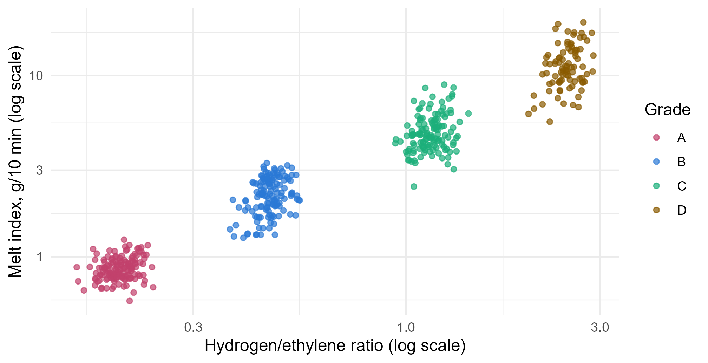
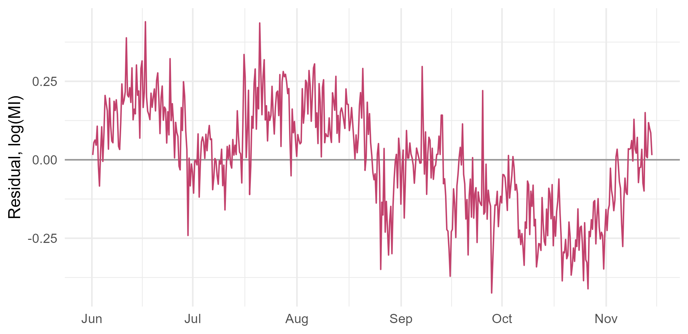

Module 7 · Lesson 2 of 14 Week 105 of 160 About 5–7 hours
Resampling and model assessment
Estimating the test error without a test set
Build a soft sensor for a polyethylene reactor’s melt index, and estimate how well it will predict, honestly. Compare a validation set, leave-one-out and k-fold cross-validation, use the bootstrap for a standard error, and catch two kinds of data leakage that make models look better than they are: choosing predictors outside the cross-validation, and ignoring that samples close in time are alike.
Lesson 1 had a luxury that real problems never have: 2,000 extra runs from the same process, to measure the test error directly. In practice, all the data you have is the data you fit the model to. This lesson is about resampling: reusing that data cleverly, to estimate how well a model will do on data it hasn’t seen.
The example for the next few lessons is a soft sensor. The plant’s gas-phase polyethylene reactor makes four grades of polymer, and the property that defines a grade is its melt index (MI): how many grams of molten polymer flow through a standard die in 10 minutes. The lab measures it every 8 hours, and a result takes about two hours. If the MI drifts off target, the plant makes off-grade polymer for hours before anyone knows. A soft sensor predicts the MI from process tags that are measured every second, so the operators can see a drift as it happens.
soft_sensor.csv has 500 lab results, from June to November 2025, with the hourly averages of 20 process tags at each sample’s time. The chemistry says that the MI depends mostly on the hydrogen/ethylene ratio (hydrogen ends the polymer chains, and shorter chains flow more easily), and also on the reactor temperature, the comonomer ratio and the ethylene pressure. The other tags are there because they were in the historian.
A soft sensor is a model that pretends to be an instrument. Before the operators trust it, someone has to say how wrong it’s likely to be. That’s this lesson’s job!
In this lesson you’ll:
- estimate a model’s test error with a validation set, and see how much it depends on the split
- use leave-one-out and k-fold cross-validation, and compare models with them
- use the bootstrap to find a standard error
- catch data leakage from choosing predictors outside the cross-validation
- see why samples that are close in time call for blocked cross-validation
The soft sensor
The MI varies by a factor of 30 across the grades, and its errors scale with its size, so models work on \log(\text{MI}). The chemistry predicts a straight line between \log(\text{MI}) and \log(\text{H}_2/\text{C}_2):
ggplot(mi, aes(h2_ratio, melt_index, color = grade)) +
geom_point(size = 1.5, alpha = 0.7) +
scale_x_log10() + scale_y_log10() +
scale_color_manual(values = c(A = "#C2416C", B = "#2a78d6", C = "#1baf7a", D = "#8a5a00")) +
labs(x = "Hydrogen/ethylene ratio (log scale)", y = "Melt index, g/10 min (log scale)", color = "Grade") +
theme_minimal(base_size = 12)
The setup code reads the data and adds the two logs. It also defines three candidate models, from simple to complicated, and a helper that computes the root mean squared error (RMSE) of a fitted model on some data. On the log scale, an RMSE of 0.17 means a typical error of about 17% of the MI.
Your turn. Find the correlation between the MI and the hydrogen ratio, first on the original scales, then on the log scales.
The log of the hydrogen ratio is the column log_h2.
c(original = cor(mi$melt_index, mi$h2_ratio),
log = cor(mi$log_mi, mi$log_h2))0.934 on the original scales and 0.973 on the log scales. The hydrogen ratio alone explains 0.973^2 = 95\% of the variation in \log(\text{MI}). The question for the soft sensor is whether the other tags can explain part of the remaining 5%, and how to tell, honestly.
The validation set approach
The simplest honest estimate: split the data at random into a training set, to fit each model, and a validation set (or hold-out set), to measure its error.
Your turn. Put 350 samples into a training set and keep 150 for validation. Fit the three models to the training set, and compute each one’s RMSE on the validation set.
The validation set is every row not in train: mi[-train, ].
set.seed(7021)
train <- sample(500, 350)
c(a = rmse(lm(f_a, mi[train, ]), mi[-train, ]),
b = rmse(lm(f_b, mi[train, ]), mi[-train, ]),
c = rmse(lm(f_c, mi[train, ]), mi[-train, ]))0.225 for hydrogen alone, 0.176 for the chemistry model, and 0.176 for all 20 tags. The three extra chemical variables cut the error by a fifth. The other 16 tags add nothing: model c’s validation error is a hair higher than model b’s (0.1764 against 0.1756), even though its training error is lower (0.163 against 0.166). More predictors always fit the training data better.
The validation set approach has two weaknesses. Only 350 of the 500 samples train each model, so the models are a little worse than they’d be with all the data, and the error estimate is a little pessimistic. And the estimate depends on which samples happened to land in the validation set.
Your turn. Repeat the split with seeds 1 to 10, and find model b’s validation RMSE for each.
Each split uses its own seed, s.
val_b <- sapply(1:10, function(s) {
set.seed(s)
train <- sample(500, 350)
rmse(lm(f_b, mi[train, ]), mi[-train, ])
})
round(val_b, 4)
range(val_b)From 0.161 to 0.183: the same model, the same data, and estimates that differ by 14%, just from the split. Over the same ten splits, model c beats model b in one, and comes within 0.001 of it in three more. With one split, you could easily conclude that the extra 16 tags help. Cross-validation fixes both weaknesses.
Leave-one-out cross-validation
Leave-one-out cross-validation (LOOCV) takes the split to its extreme: leave out one sample, fit the model to the other 499, predict the one left out, and repeat for every sample. The estimate is the average of the 500 squared errors:
\text{CV}_{(n)} = \frac{1}{n} \sum_{i=1}^n \big(y_i - \hat y_{(i)}\big)^2 ,
where \hat y_{(i)} is the prediction from the model fitted without sample i. Every model trains on almost all the data, and there’s no randomness at all. It sounds expensive, but for least squares there’s a shortcut: one fit gives every leave-one-out residual, from the leverages h_i of Module 2,
y_i - \hat y_{(i)} = \frac{y_i - \hat y_i}{1 - h_i} .
Your turn. Compute model b’s LOOCV RMSE with the shortcut.
Divide each residual by 1 - h_i: (1 - h).
fit_b <- lm(f_b, data = mi)
h <- hatvalues(fit_b)
sqrt(mean((resid(fit_b) / (1 - h))^2))0.1700. A loop that really refits the model 500 times gives exactly the same number. The shortcut works for any linear smoother, but not for most of the methods later in this module, where LOOCV would mean n refits. LOOCV also has a subtler problem: the 500 fitted models are almost identical, so their errors are highly correlated, and the average of correlated errors has a high variance.
k-fold cross-validation
k-fold cross-validation is the workhorse. Divide the data at random into k groups, or folds, of about equal size. Hold out the first fold, fit the model to the other k - 1, and compute its error on the fold that was held out. Repeat for each fold, and average:
\text{CV}_{(k)} = \frac{1}{k} \sum_{j=1}^k \text{MSE}_j .
With k = 5 or 10, each model trains on 80% or 90% of the data, and it takes only 5 or 10 fits. It’s less variable than LOOCV, and a little more biased, and in practice, k = 5 or 10 is the standard compromise.
Your turn. Assign each sample to one of 10 folds at random, then compute the 10-fold cross-validated RMSE of the three models.
Predict for the fold that was held out: mi[fold == j, ].
cv_rmse <- function(formula, fold) {
err <- numeric(nrow(mi))
for (j in unique(fold)) {
fit <- lm(formula, data = mi[fold != j, ])
err[fold == j] <- mi$log_mi[fold == j] - predict(fit, mi[fold == j, ])
}
sqrt(mean(err^2))
}
set.seed(7022)
fold <- sample(rep(1:10, length.out = 500))
c(a = cv_rmse(f_a, fold), b = cv_rmse(f_b, fold), c = cv_rmse(f_c, fold))0.217, 0.170 and 0.174. Every sample is predicted exactly once, by a model that didn’t see it, and the verdict is clearer than any single split: the chemistry model is best, and adding the other 16 tags makes it slightly worse. sample(rep(1:10, length.out = 500)) makes folds of exactly 50, in random order.
NoteGo deeper: the bias and variance of cross-validation
Each CV estimate is itself a statistic, with a bias and a variance. Its bias comes from training on less than all the data: with k = 2, each model sees half the data and is worse than the final model will be, so the estimate is pessimistic. LOOCV is nearly unbiased. Its variance comes from two sources: which observations happen to be in the data, and how they’re split. LOOCV’s n fits overlap almost completely, so their errors are strongly positively correlated, and the mean of correlated quantities is more variable than the mean of independent ones. Folds of 5 or 10 overlap less. Kohavi’s 1995 study (“A Study of Cross-Validation and Bootstrap for Accuracy Estimation and Model Selection”, IJCAI) found 10-fold CV the best choice on real datasets, and The Elements of Statistical Learning, section 7.10, discusses why. Neither bias nor variance can be computed from the data alone, which is why repeating k-fold CV with different random folds (Challenge 1) is a good habit.
The bootstrap
Cross-validation estimates prediction error. The bootstrap is a more general tool, from Module 4: it estimates the uncertainty of almost any statistic, by recomputing it on resamples of the data drawn with replacement.
Your turn. Estimate the standard error of model b’s reactor temperature coefficient from 1,000 bootstrap resamples, and compare it with the one from summary().
A bootstrap resample is drawn with replacement: replace = TRUE.
set.seed(7023)
boot_coef <- replicate(1000, {
rows <- sample(500, replace = TRUE)
coef(lm(f_b, data = mi[rows, ]))[["reactor_temp_C"]]
})
c(bootstrap = sd(boot_coef),
formula = summary(lm(f_b, data = mi))$coefficients["reactor_temp_C", "Std. Error"])0.0073 from the bootstrap, 0.0069 from the formula, for a coefficient of 0.100: each degree raises the MI by about 10%. The two agree well. The formula assumes constant error variance; the bootstrap doesn’t, and it works just as well for statistics with no formula at all, like a test RMSE or a lasso coefficient. But both assume that the 500 samples are independent, and the last step shows they aren’t.
Data leakage I: choosing predictors outside the CV
Data leakage is when information from the data used to judge a model gets into the model itself. It makes the CV estimate optimistic, sometimes absurdly so, and it’s the most common way that machine-learning results fail to hold up.
The classic case: with many candidate predictors, a common recipe is to keep the ones most correlated with the response, then cross-validate a model on those. The trap is that the screening used all the data, including every fold that’s later held out.
Your turn. Simulate 50 samples of 1,000 predictors and a response that are all pure noise. Keep the 10 predictors most correlated with the response, then 5-fold cross-validate a linear model on them. Compare its CV mean squared error with the variance of the response, which is the MSE of just predicting the mean.
Predict the held-out fold, d[fold == j, ].
set.seed(7024)
X <- matrix(rnorm(50 * 1000), 50)
y <- rnorm(50)
top <- order(abs(cor(X, y)), decreasing = TRUE)[1:10]
d <- data.frame(y = y, X[, top])
fold <- rep(1:5, length.out = 50)
err <- numeric(50)
for (j in 1:5) {
fit <- lm(y ~ ., data = d[fold != j, ])
err[fold == j] <- y[fold == j] - predict(fit, d[fold == j, ])
}
c(cv_mse = mean(err^2), var_y = var(y))A CV MSE of 0.49, against 0.91 for predicting the mean: the model seems to explain almost half the variance of pure noise. Out of 1,000 noise predictors, some are correlated with y by chance, and they stay correlated with it in every fold, because the folds were part of the data that chose them.
The fix is to treat the screening as part of the model: every step that learns from the data happens inside each fold, using only that fold’s training data. That includes choosing predictors, but also standardizing, imputing missing values, and choosing tuning settings.
Your turn. Redo the cross-validation, choosing the top 10 predictors inside each fold, from that fold’s training rows only.
Correlate the training rows of X with the training rows of y: y[tr].
set.seed(7024)
X <- matrix(rnorm(50 * 1000), 50)
y <- rnorm(50)
fold <- rep(1:5, length.out = 50)
err <- numeric(50)
for (j in 1:5) {
tr <- fold != j
top_j <- order(abs(cor(X[tr, ], y[tr])), decreasing = TRUE)[1:10]
d <- data.frame(y = y, X[, top_j])
fit <- lm(y ~ ., data = d[tr, ])
err[!tr] <- y[!tr] - predict(fit, d[!tr, ])
}
mean(err^2)1.27: worse than predicting the mean (0.91), which is the truth. The model is useless, and now the CV says so. This example is from The Elements of Statistical Learning, section 7.10.2, “The Wrong and Right Way to Do Cross-validation”, and it’s still one of the most common mistakes in published work.
Data leakage II: samples close in time
Random folds assume that the samples are independent, so that a held-out sample is as new to the model as a future one. For the soft sensor, that’s false. The catalyst’s activity drifts slowly, and nobody measures it, so it shows up in the residuals:
fit_b <- lm(log_mi ~ log_h2 + reactor_temp_C + comonomer_ratio + c2_pressure_bar, data = mi)
ggplot(data.frame(time = as.POSIXct(mi$time, tz = "UTC"), res = resid(fit_b)), aes(time, res)) +
geom_hline(yintercept = 0, color = "grey60") +
geom_line(color = "#C2416C", linewidth = 0.5) +
labs(x = NULL, y = "Residual, log(MI)") +
theme_minimal(base_size = 12)
The lag-1 autocorrelation of these residuals is 0.80: each sample’s error is a lot like the previous one’s. With random folds, every held-out sample has neighbors 8 hours before and after it in the training data, sharing its drift, so the model “knows” the drift it’s being tested on. A soft sensor in use only ever predicts the future. The honest test holds out blocks of consecutive samples, so the model has to predict a stretch of time it hasn’t seen.
Your turn. Make 10 folds of 50 consecutive samples each (about 17 days), and compute the blocked CV RMSE of the three models.
Blocks of 50: ceiling(seq_len(500) / 50) gives 1 to 50 a fold number of 1, 51 to 100 a 2, and so on.
cv_rmse <- function(formula, fold) {
err <- numeric(nrow(mi))
for (j in unique(fold)) {
fit <- lm(formula, data = mi[fold != j, ])
err[fold == j] <- mi$log_mi[fold == j] - predict(fit, mi[fold == j, ])
}
sqrt(mean(err^2))
}
block <- ceiling(seq_len(500) / 50)
c(a = cv_rmse(f_a, block), b = cv_rmse(f_b, block), c = cv_rmse(f_c, block))0.235, 0.194 and 0.216, all higher than the random-fold estimates (0.217, 0.170 and 0.174). Model b’s honest error is about 19%, not 17%. And the penalty for using all 20 tags is much bigger, 0.216 against 0.194: random folds let the extra tags fit the drift, through accidental patterns that hold for a few days and then stop. In this case, the leakage didn’t just flatter the models; it hid how much the extra tags hurt.
The same goes for any grouping in the data. If a dataset has several samples from each batch, each patient or each pump, the folds should keep each group together (grouped CV). Otherwise a model can do well by recognizing the group, not by learning anything that carries over to new ones. Module 6’s time-series cross-validation, with its rolling forecast origin, is the strictest version for time series.
Challenge round
Challenge 1 · Repeated cross-validation. One run of 10-fold CV still depends on the random folds. Repeat it 5 times, with seeds 7031 to 7035, for model b, and find the mean and the range of the five estimates.
Cross-validate model b, f_b.
cv_rmse <- function(formula, fold) {
err <- numeric(nrow(mi))
for (j in unique(fold)) {
fit <- lm(formula, data = mi[fold != j, ])
err[fold == j] <- mi$log_mi[fold == j] - predict(fit, mi[fold == j, ])
}
sqrt(mean(err^2))
}
reps <- sapply(7031:7035, function(s) {
set.seed(s)
fold <- sample(rep(1:10, length.out = 500))
cv_rmse(f_b, fold)
})
c(mean = mean(reps), min = min(reps), max = max(reps))A mean of 0.1703, and the five estimates span only 0.1697 to 0.1706. Compare the ten validation splits, which spanned 0.161 to 0.183: because every sample is predicted once in each run, k-fold CV is far more stable than a single split. Repeating it costs a little more computing, and it shows how much the folds matter.
Challenge 2 · A block bootstrap. The ordinary bootstrap also assumes independent samples. A moving-block bootstrap resamples blocks of consecutive samples instead, so that each block keeps its drift. Resample 20 blocks of 25 consecutive samples, with replacement, to make each 500-sample resample, and find the standard error of the temperature coefficient.
A block that starts at s and has 25 samples ends at s + 24.
set.seed(7025)
boot_block <- replicate(1000, {
starts <- sample(1:476, 20, replace = TRUE)
rows <- as.vector(sapply(starts, function(s) s:(s + 24)))
coef(lm(f_b, data = mi[rows, ]))[["reactor_temp_C"]]
})
sd(boot_block)0.0146: twice the ordinary bootstrap’s 0.0073, and twice the formula’s. Because neighboring samples share their drift, 500 samples carry less information than 500 independent ones would, and an honest 95% interval for the temperature effect is about twice as wide, roughly 0.07 to 0.13. The block length is a judgment call: long enough to keep most of the dependence (the drift lasts days, so 25 samples, about 8 days, is reasonable), and short enough to leave many blocks to resample.
Quick quiz
1. What is the main weakness of a single validation set?
Ten random splits gave estimates from 0.161 to 0.183 for the same model.
2. In 10-fold cross-validation, how many times is each sample predicted?
Each sample is in exactly one held-out fold.
3. Why is k = 5 or 10 usually preferred to LOOCV?
LOOCV is nearly unbiased, but its estimate is variable, and for most methods it’s expensive.
4. You standardize all the predictors using the whole dataset’s means and SDs, then cross-validate. Is that leakage?
It’s usually mild, but the rule is simple: every step that learns from data happens inside each fold. Lesson 14’s recipes do that automatically.
5. Why was random-fold CV optimistic for the soft sensor?
Blocked CV, which holds out stretches of time, gave higher and more honest errors.
6. What does the bootstrap estimate?
By recomputing the statistic on resamples drawn with replacement.
Wrap-up
You can now estimate how well a model will predict, and avoid the traps that make it look better than it is. Here’s what you’ve learned:
- A validation set is simple, but its estimate depends on the split: 0.161 to 0.183 for the same model.
- LOOCV fits n models, each without one sample. For least squares, one fit and the leverages give it: 0.170 for the chemistry model.
- k-fold CV with k = 5 or 10 is the standard: stable, cheap and nearly unbiased. It chose the chemistry model over all 20 tags, 0.170 against 0.174.
- The bootstrap gives standard errors for almost any statistic: 0.0073 for the temperature coefficient.
- Leakage from screening: choosing predictors on all the data made pure noise look predictive. Every step that learns from data belongs inside the folds.
- Leakage from dependence: samples close in time share the drift. Blocked CV gave 0.194 for the chemistry model, and showed that the extra tags hurt more than random folds said.
TipPractice in RStudio (optional, about an hour)
Download soft_sensor.csv into your project’s data-raw/ folder.
- The bias of small training sets. Compute the k-fold CV RMSE of model b for k = 2, 5, 10, 25 and LOOCV. Repeat each 10 times with different folds, and plot the means and spreads.
- Group by grade. Use the grade as the fold: train on three grades, and predict the fourth. How well does the soft sensor extrapolate to a grade it has never seen? Which grade is hardest?
- The
bootpackage. Redo the bootstrap withboot::boot(), and get a percentile and a BCa interval for the temperature coefficient withboot::boot.ci(). - Forward in time. Train on the first 300 samples and test on the last 200. Compare with the blocked CV estimate.
NoteKey words from this lesson
- Resampling
- Reusing the data, by repeatedly fitting models to subsets or resamples of it, to estimate a model’s performance or a statistic’s uncertainty.
- Validation set approach
- Splitting the data once into a training set and a validation (hold-out) set.
- Leave-one-out cross-validation (LOOCV)
- Fitting the model n times, each time leaving out one observation and predicting it.
- k-fold cross-validation
- Splitting the data into k folds, and using each fold once as the validation set for a model trained on the others.
- Bootstrap
- Estimating a statistic’s sampling distribution by recomputing it on resamples drawn with replacement.
- Data leakage
- Information from the data used to evaluate a model getting into the model, which makes the evaluation optimistic.
- Blocked (grouped) cross-validation
- Cross-validation whose folds keep related observations together: consecutive samples, or samples from the same group.
- Soft sensor
- A model that estimates a hard-to-measure quality from process measurements that are easy to get.
NoteWant to read more?
- James, Witten, Hastie and Tibshirani, An Introduction to Statistical Learning (2nd edition), chapter 5, “Resampling Methods”.
- Hastie, Tibshirani and Friedman, The Elements of Statistical Learning, sections 7.10 and 7.11, including “The Wrong and Right Way to Do Cross-validation”.
- Sebastian Raschka, “Model Evaluation, Model Selection, and Algorithm Selection in Machine Learning”, 2018, arXiv:1811.12808. A readable survey of the whole topic.
- Petr Kadlec, Bogdan Gabrys and Sibylle Strandt, “Data-driven Soft Sensors in the process industry”, Computers & Chemical Engineering 33(4), 2009, doi:10.1016/j.compchemeng.2008.12.012. A review of soft sensors, written for chemical engineers.